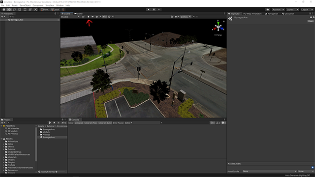
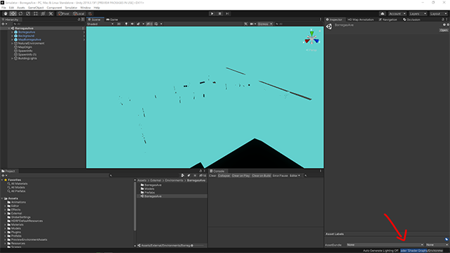
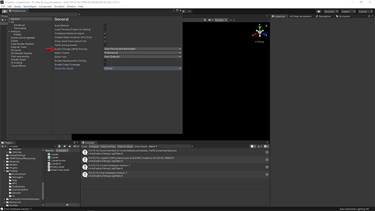
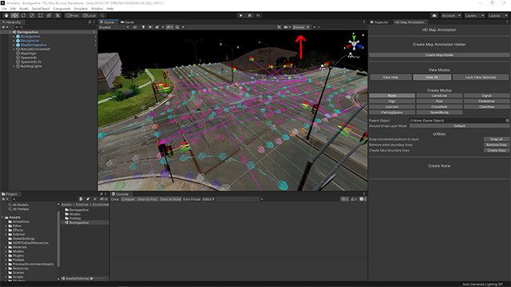
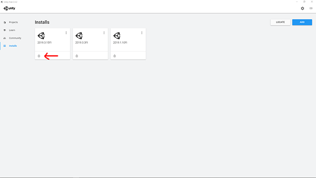

Unity Help
SVL Simulator was created with Unity Real-Time Development Platform and its High-Definition Render Pipeline (HDRP). HDRP is Unity Technologies' scriptable pipeline that is used to create software applications that prioritize graphics quality for realism in demanding scenarios utilizing GPU hardware. Since this technology is relatively new, there can be some issues and solutions that are not documented.
This document goes over some of our own tips, guides, and recommended best practices for working inside the Unity Editor.
HDRP Requirements top#
HDRP targets high-end PCs and prioritizes high definition visuals but has specific system requirements.
- Target supported APIs are D3D11, D3D12, Metal, and Vulkan
- Architecture x86, x86_64
- We highly recommend GPU's with at least 8GB of memory - HDRP and SVL Simulator are very GPU-intensive.
HDRP Asset Conversion top#
If you are converting non-HDRP assets to HDRP, there are a few things to watch out for.
- Before importing assets into HDRP, be sure to remove all custom shaders
- Change materials to use Unity's standard shaders
- Use Unity's tools and documentation to properly convert assets
HDRP shader issues top#
After pulling major changes to SVL Simulator, or a crash, HDRP may get corrupted. This is a known issue but it can be fixed easily:
- Close Unity
- Navigate to the root folder of SVL Simulator that you cloned
- Find Library folder
- Delete Library folder
- Open Unity. Wait while Unity creates the Library folder
- Close Unity and open again
Unity Editor Tips top#
There are many ways to fix, prevent issues, and improve workflows with Unity Editor.
- Turn off scene lighting in Scene View Panel. This adds lighting to the scene view camera because SVL Simulator adds lights at runtime 
- When opening a prefab or a environment scene you may see a cyan texture on meshes; this is fine. This is Unity compiling a shader - DO NOT close Unity or try to do anything until it is finished. Before making a bundle build, be sure to open assets in the editor so Unity can do this first. 
- Set Script Changes While Playing to Stop Playing and Recompile in Edit -> Preferences -> General window. This prevents bad states after changing code and leaving the Editor in play mode. It is also recommended to toggle off Auto Refresh and use Ctrl+R to recompile but it is up to your preferences. 
- Change the default Unity Editor Layout by moving the Console View Panel next to the Project View Panel. This allows you to see any errors easily and make better screen captures for any issues you report.


- If you have issues with an asset, you can right click and choose Reimport. This helps solve many issues with individual assets.


{kind=link}
{kind=link}
{kind=link}
- SVL Simulator uses many Editor Gizmos to visualize tools. Be sure to enable this button in the Scene View Panel. 
{kind=link}
- Be sure to install support for both Windows and Linux. This is needed to make any asset bundle because SVL Simulator supports both of these targets. This image is an example of a Windows target but with Linux support. 
{kind=link}